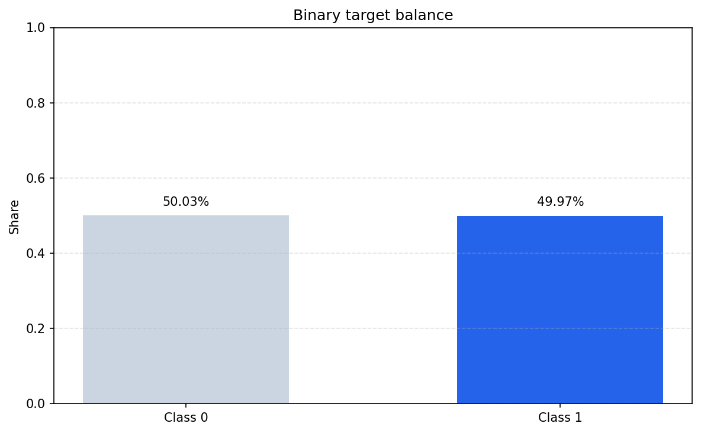
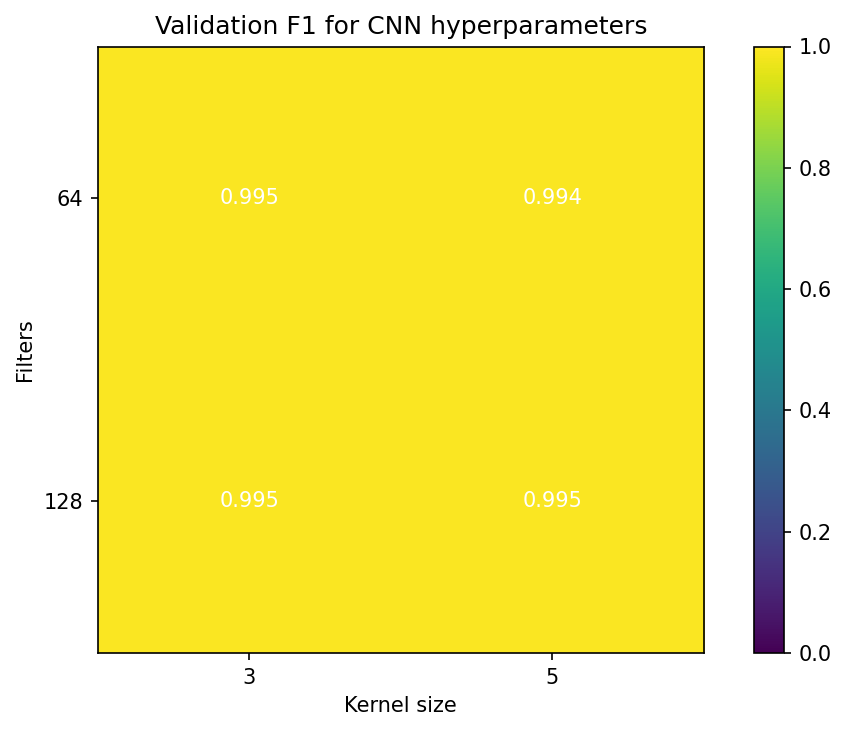
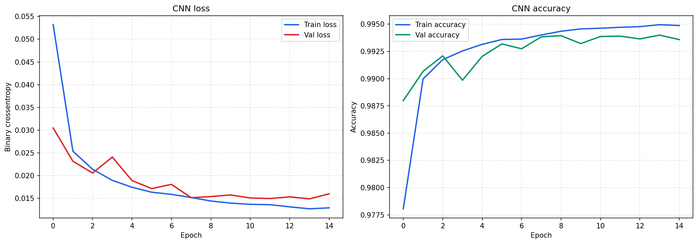
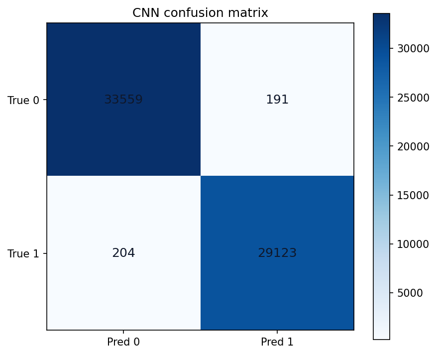
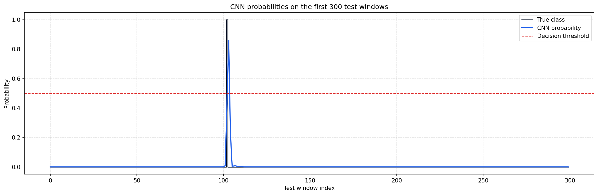
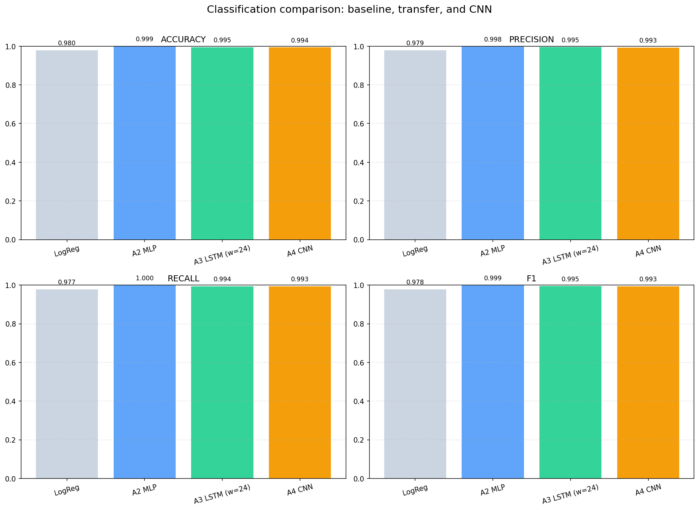

Assignment 4: 1D CNN Classification
Reframing the sequence forecasting pipeline from assignments 2 and 3 into a binary decision task and comparing a CNN classifier against a baseline logistic model and previous neural-network results.
Appliances, but the provided processed dataset is the same weather dataset used in assignments 2 and 3.T (degC): class 1 means the target value is above the global median 9.42.49.97%, so no class weights were needed.This preserves consistency with assignment 2 (MLP regression) and assignment 3 (LSTM regression), while still satisfying the CNN classification requirement.

The median split produces a nearly balanced dataset, which makes accuracy, precision, recall, and F1 directly interpretable.
Conv1D - MaxPooling1D - Flatten - Dense(64) - Dense(1, sigmoid).binary_crossentropy. Optimizer: Adam.accuracy, precision, recall.val_loss with patience 3.| Filters | Kernel | Epochs | Val F1 | Val Loss |
|---|---|---|---|---|
| 64 | 3 | 15 | 0.9948 | 0.0149 |
| 64 | 5 | 12 | 0.9942 | 0.0161 |
| 128 | 3 | 14 | 0.9947 | 0.0153 |
| 128 | 5 | 12 | 0.9947 | 0.0154 |

All four CNN configurations performed strongly, but 64 filters / kernel 3 produced the best validation F1 and was saved as cnn_classifier.h5.

Training is stable, converges quickly, and does not show visible overfitting on the validation split.

The confusion matrix confirms that both classes are learned well, with very few false positives and false negatives.

Predicted probabilities track regime switches sharply, and most decisions are far from the 0.5 threshold.
To make the comparison fair, the saved regression models from assignment 2 and assignment 3 were evaluated as binary decision models by thresholding their continuous predictions at the same median value.

| Model | Accuracy | Precision | Recall | F1 |
|---|---|---|---|---|
| Logistic Regression | 0.9796 | 0.9787 | 0.9774 | 0.9781 |
| Assignment 2 MLP | 0.9992 | 0.9985 | 0.9999 | 0.9992 |
| Assignment 3 LSTM (window 24) | 0.9950 | 0.9955 | 0.9937 | 0.9946 |
| Assignment 4 CNN | 0.9937 | 0.9935 | 0.9930 | 0.9933 |
Stage 4 is a classification task, so regression metrics are not directly comparable to CNN accuracy/F1. Still, the saved regression models from previous stages provide useful context.
| Previous Model | RMSE | MAE |
|---|---|---|
| Assignment 2 MLP | 0.0195 | 0.0132 |
| Assignment 3 LSTM | 0.1867 | 0.1233 |
The thresholded MLP remains extremely strong because the feature set already contains informative lag and rolling statistics, making the binary boundary easy to reconstruct.
F1 = 0.9933 on the test set.